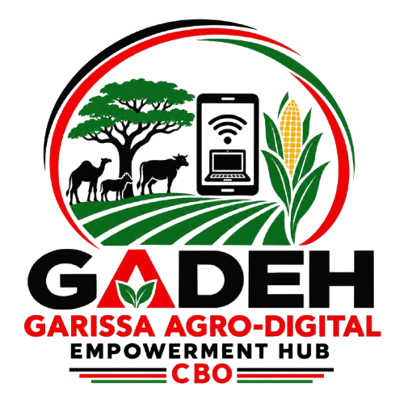

Garissa Agro-Digital Empowerment Hub CBO is committed to equipping communities with practical digital skills, promoting Internet of Things innovation and supporting sustainable agricultural entrepreneurship.
Garissa Agro-Digital Empowerment Hub CBO (GDEH CBO) is a community-based organization committed to promoting inclusive socio-economic development through digital literacy, technology innovation, Internet of Things (IoT), entrepreneurship and agro-entrepreneurship.
The organization seeks to equip young people, women, farmers, entrepreneurs, students, job seekers and underserved communities with practical skills, technology knowledge and opportunities that can improve livelihoods and strengthen local economic development.
GDEH CBO recognizes technology and agriculture as important drivers of employment, entrepreneurship, food security, innovation and sustainable development.
Through training, mentorship, innovation, community engagement, partnerships and enterprise development, GDEH CBO seeks to bridge the digital divide and create practical pathways toward learning, employment, entrepreneurship and sustainable livelihoods.
A digitally empowered and economically resilient community where technology, innovation and agro-entrepreneurship create sustainable opportunities for all.
To empower communities through digital literacy, Internet of Things, technology innovation, entrepreneurship and sustainable agricultural enterprise development.
Building practical digital skills that enable community members to access information, education, employment, online services and digital economic opportunities.
Introducing young people and communities to connected technologies and practical IoT solutions that address real-world challenges.
Connecting agriculture with technology, enterprise and innovation to create sustainable livelihoods and market-oriented agricultural opportunities.
Practical digital skills training for beginners, students, youth, women, entrepreneurs and underserved community members.
Practical exposure to connected devices, sensors, automation and technology-based solutions.
GDEH CBO promotes the connection between technology, agriculture and enterprise to improve productivity and create sustainable livelihoods.
Through digital tools and Internet of Things technologies, the organization seeks to promote practical solutions for agricultural production, resource management and decision-making.
GDEH CBO emphasizes practical, accessible and community-based learning. Training may be delivered through:
Communities participate in identifying challenges, developing solutions and implementing activities.
Training focuses on useful skills that beneficiaries can immediately apply.
Technology and creativity are encouraged to address real community challenges.
Programs are designed to encourage long-term social and economic benefits.
GDEH CBO recognizes that sustainable community development requires strong collaboration and strategic partnerships.
The organization seeks collaboration with:
Potential areas of collaboration include funding, technical assistance, training, mentorship, technology provision, research, market access, equipment support and enterprise development.
Increased digital literacy and technology confidence.
Increased exposure to emerging connected technologies.
Improved access to digital and entrepreneurial opportunities.
Growth of youth and women-led enterprises.
Increased technology adoption in agriculture.
Stronger and more economically resilient communities.
GDEH CBO's programs contribute to several Sustainable Development Goals, including:
Honesty, transparency and accountability.
Equipping people with skills and opportunities.
Encouraging creativity and technology-based solutions.
Promoting equal participation and opportunity.
Supporting long-term social and economic benefits.
Building partnerships for stronger development outcomes.
GDEH CBO is based in Garissa County, Kenya, with a focus on communities within Garissa and surrounding areas.
The organization seeks to expand its programs to underserved communities throughout Garissa County and, where resources and partnerships permit, other parts of Kenya.
GDEH CBO aspires to become a recognized community empowerment organization in Northern Kenya in the fields of digital transformation, digital literacy, Internet of Things, technology innovation, youth empowerment and agro-entrepreneurship.
In the long term, the organization seeks to establish a well-equipped Digital and Agro-Entrepreneurship Empowerment Hub serving as a centre for:
Garissa Agro-Digital Empowerment Hub CBO is committed to transforming communities through the combined power of digital literacy, technology, Internet of Things, innovation, entrepreneurship and agriculture.
By equipping people with practical skills, promoting innovative technology solutions, supporting agro-entrepreneurship and building strategic partnerships, GDEH CBO seeks to contribute to a more skilled, productive, innovative and economically resilient community.
GDEH CBO believes that sustainable development begins when communities have the knowledge, skills, tools, opportunities and support required to create solutions for themselves.
Garissa Agro-Digital Empowerment Hub CBO — Empowering Communities Through Digital Literacy, Technology, IoT & Agro-Entrepreneurship.